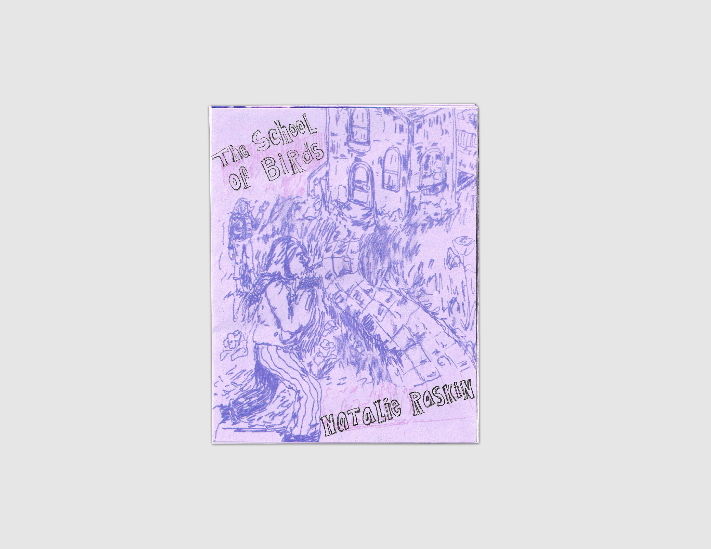
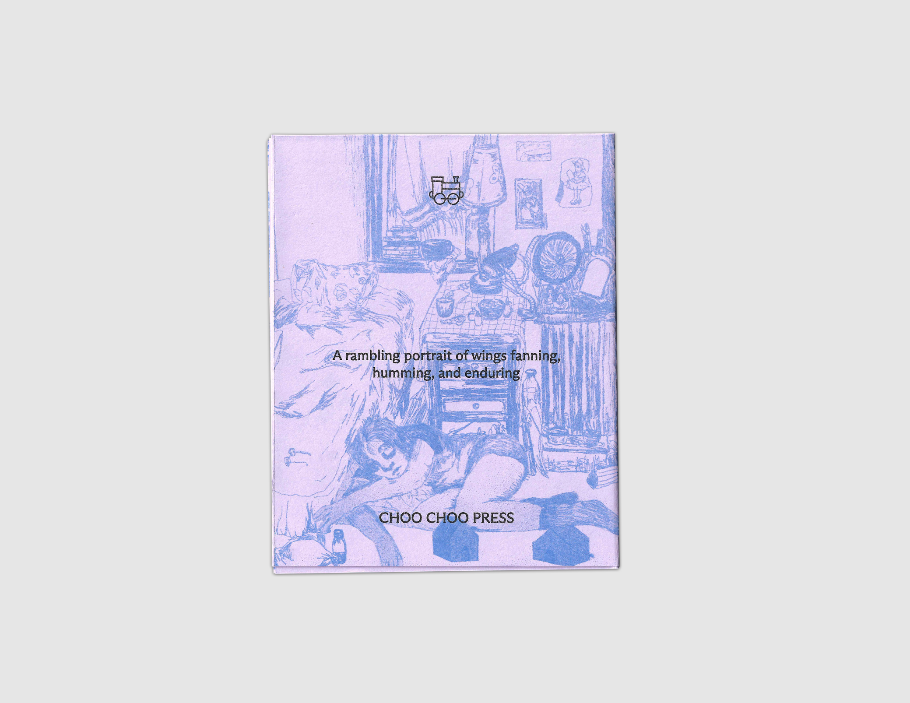

The School of Birds
by Natalie Raskin
$15
Shop
- 2026
- 5x4in
- 6 pages
- 2-color riso
- Printed on French paper
- 8-fold zine
- Edition of 250, 1st edition
A rambling portrait of wings fanning, humming, and enduring.
An examination of life in five parts. Songs, paintings, family, and birds meld and scatter in this moving portrait of an artist intent on surviving and creating. A stunning debut from a singular voice that’s unafraid to look in and somehow, keep dreaming. Unfolds to reveal a Risograph-printed comic poster written and drawn by the author.
Natalie Raskin (she/they) is a painter, bookmaker, writer, and educator raised and living in Brooklyn, New York. She builds worlds out of loneliness and alter-egos. Natalie received BA from Sarah Lawrence College, and her MFA in Studio Art at Queens College/Social Practice CUNY.

